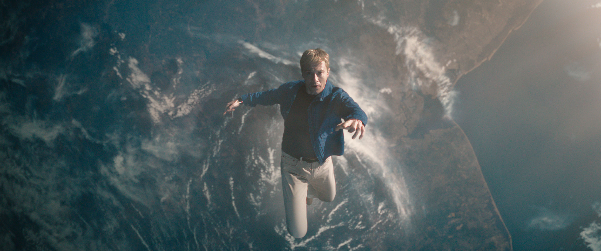
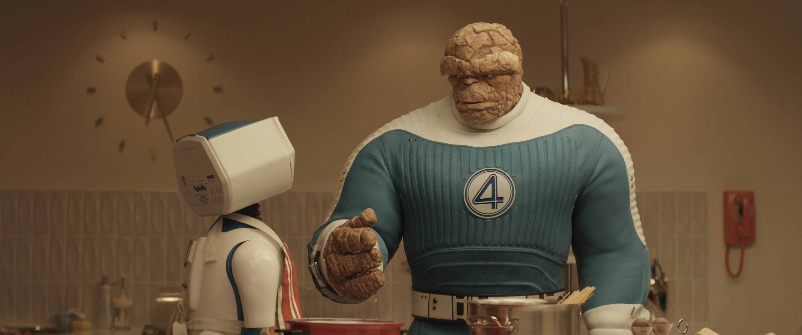
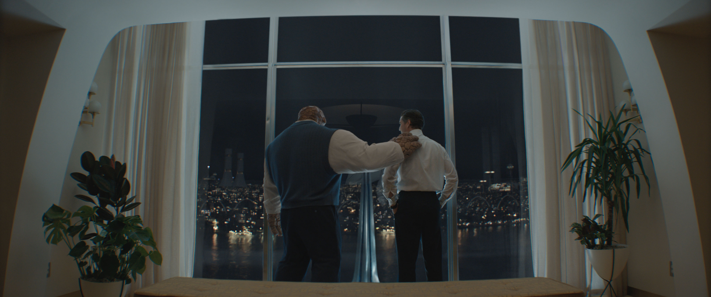
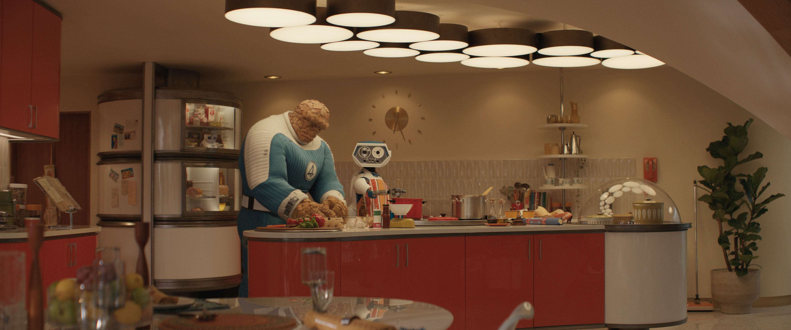
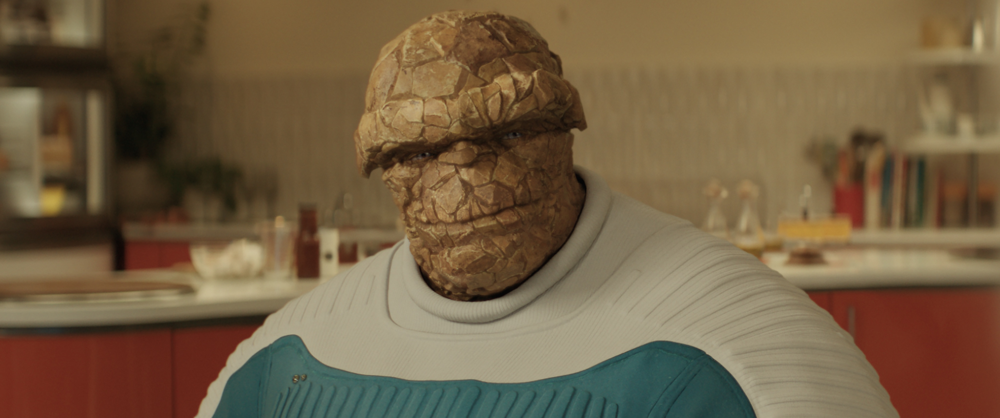
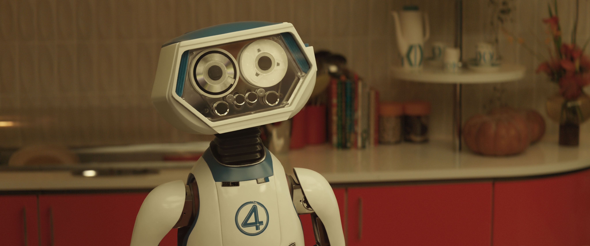

The Marvel Cinematic Universe is finally welcoming its first family. The Fantastic Four: First Steps promises to be more than just another superhero origin story. Directed by Matt Shakman (WandaVision), the film transports us to a vibrant, retro-futuristic 1960s that feels both nostalgic and ahead of its time.
A New Vision for New York

The film's production design leans heavily into the 1960s "World of Tomorrow" aesthetic.
Unlike previous iterations, First Steps is reportedly set in an alternate reality version of the 1960s. This allows the production to lean into a specific "Googie" architectural style and a optimistic, cosmic-age aesthetic that defines the team's early comic book adventures by Stan Lee and Jack Kirby.
The title "First Steps" suggests a focus on exploration and discovery. The Fantastic Four have always been adventurers first and superheroes second, and Shakman seems intent on recapturing that sense of wonder as the team ventures into the Unknown, the Negative Zone, and beyond.
"This isn't your typical MCU New York. It's a city built on the dreams of the space age."
The Family Dynamic
At the heart of the film is the chemistry between the four leads. Pedro Pascal leads the team as Reed Richards, bringing a fatherly yet obsessive brilliance to Mr. Fantastic. Vanessa Kirby portrays Sue Storm, often described as the most powerful and emotionally grounded member of the group.

The emotional core of the film rests on the relationship between Reed Richards and Sue Storm.
Joseph Quinn brings a youthful, impulsive energy to Johnny Storm, while Ebon Moss-Bachrach takes on the tragic and heroic role of Ben Grimm. The Thing will be brought to life through a combination of physical performance and cutting-edge CGI, aiming for a look that is both rocky and expressive.
Cosmic Threats & Galactus

Visual effects testing for the cosmic rays that grant the team their abilities.
While the film focuses on the family, the stakes are undeniably cosmic. Ralph Ineson has been cast as the world-devourer Galactus, with Julia Garner appearing as the Shalla-Bal version of the Silver Surfer. This setup suggests that the Fantastic Four's "first steps" will immediately put them in the path of one of the most formidable entities in the Marvel multiverse.
The Core Cast
- Pedro Pascal as Reed Richards / Mr. Fantastic, the brilliant leader of the team.
- Vanessa Kirby as Sue Storm / The Invisible Woman, the heart and power of the family.
- Joseph Quinn as Johnny Storm / The Human Torch, the hot-headed younger brother.
- Ebon Moss-Bachrach as Ben Grimm / The Thing, Reed's loyal and powerful best friend.
- Ralph Ineson as Galactus, the celestial entity that threatens to consume worlds.
- Julia Garner as Shalla-Bal / Silver Surfer, the herald of Galactus.
A Foundation for Phase Six
The Fantastic Four: First Steps is poised to be a cornerstone of the MCU's future. By establishing these characters in their own unique setting before potentially bringing them into the broader multiverse, Marvel is giving them the room they need to breathe and become the icons they were always meant to be. The journey begins in 2025, and it's a step toward a much larger universe.
Production Gallery






